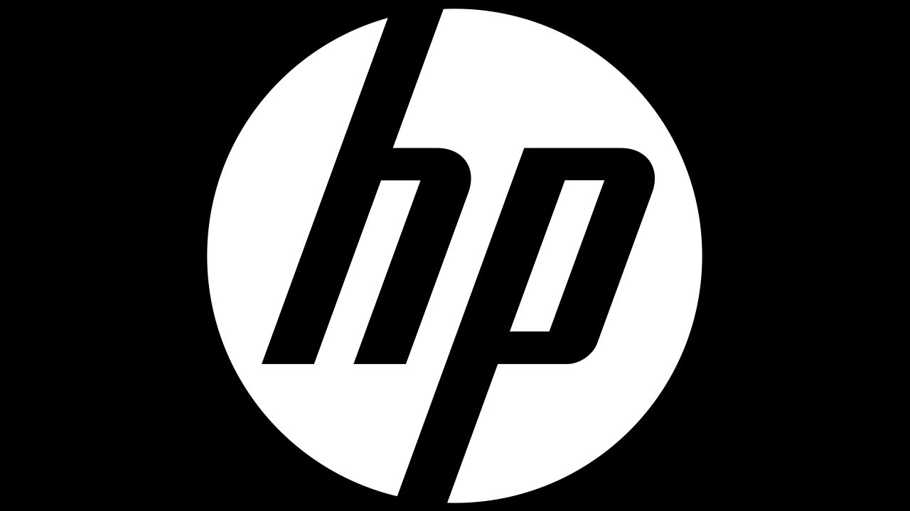

HP
Más conocida como HP , fue una empresa de tecnología estadounidense, con sede en Palo Alto, California. Fabricaba y comercializaba hardware y software además de brindar servicios de asistencia relacionados con la informática. La compañía fue fundada en 1939 por William Hewlett y David Packard, y se dedicaba a la fabricación de instrumentos de medida electrónica y de laboratorio.
El 6 de octubre de 2014, Hewlett-Packard anuncio su división en dos firmas que cotizarían de manera separada en el mercado de valores, con lo que su negocio de computadoras e impresoras operaría independiente de su unidad de servicios y equipos corporativos.
El 1 de noviembre de 2015 se hizo efectiva su división en dos empresas: HP Inc., dedicada a las impresoras y las computadoras personales, y Hewlett Packard Enterprise, dedicada a los servidores, equipos de almacenamiento y redes, programas de cómputo y servicios para terceras empresas. En el proceso de separación se planea despedir a 5000 empleados de la firma.